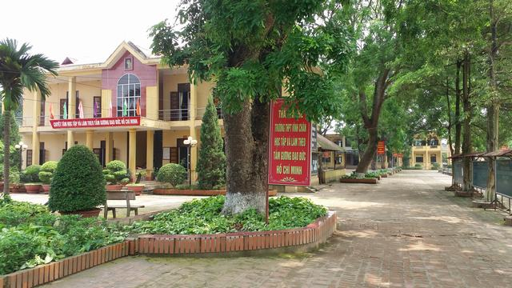

Giới thiệu
Ngay sau chiến thắng lịch sử mùa xuân năm 1975,miền Nam được giải phóng ,cả nước đi lên Chủ Nghĩa Xã
Hội. Trước nhu cầu phat triển nguồn nhân lực để xây dựng và bảo vệ Tổ Quốc Việt Nam Xã HộI Chủ Nghĩa
,tháng 11-1976 theo quyết định của UBND tỉnh Phú Thọ Trường cấp III Vĩnh Chân ( nay là trường
T.H.P.T Vĩnh Chân ) được thành lập cùng với trương cấp III Phong Châu,địa điểm được đặt tại xã Vĩnh
Chân , huyện Hạ Hòa
Xây dựng và trưởng thành trên một vùng quê nghèo ,thuần nông,cơ sở hạ tầng chưa phát triển ,điều
kiện kinh tế còn gặp nhiều khó khăn mhưng thầy và trò trường THPT vĩnh Chân trong rất nhiều năm đã
kiên trì phấn đấu, vượt qua nhiều gian nan thử thách ,qua bao bước thăng trầm đã và đang vươn lên
trở thành một cơ sở giáo dục có chất lượng giáo dục toàn diện ,là địa chỉ đáng tin cậy của nhân
dân,phụ huynh học sinh tỉnh Phú Thọ nói chung ,Huyện Hạ Hòa nói riêng .

Đặc điểm tình hình:
Trường THPT Vĩnh Chân
Địa chỉ : Xã Vĩnh Chân - Huyện Hạ Hoà - Tỉnh Phú Thọ
Điện thoại: 0210 3 681 218
Website : http://thptvinhchan.phutho.edu.vn
Email : c3vinhchan.phutho@moet.edu.vn
Hiệu trưởng : Cô giáo Lê Thị Thúy DungCác Phó Hiệu trưởng:
Phó Hiệu trưởng: - Thầy giáo Cù Đức Hòa - Cô giáo Trần Thị Phi Nga
* Quá trình thành lập: Ngày thành lập 9/11/1976. Từ ngày thành lập đến nay trường đóng tại vùng miền núi tỉnh Phú Thọ - xã Vĩnh Chân, Huyện Hạ hòa. Năm 1993 sát nhập với trường cấp 2 vĩnh chân, năm 1998 tách trường cấp 3 riêng và tên gọi là trường THPT Vĩnh Chân cho đến nay.
Những đặc điểm chính của đơn vị:
Trường THPT Vĩnh chân ra đời tại huyện miền núi Hạ Hoà, tiếp giáp với huyện Cẩm Khê, Thanh Ba, Đoan Hùng và tỉnh Yên Bái. Đất đai của Hạ Hoà chủ yếu là đồi núi, đồng bằng hẹp, thuận lợi cho nghề nông trồng lúa nước, trồng cây công nghiệp và lâm nghiệp.. Nhân dân xã Vĩnh Chân ngày xưa nổi tiếng là đất khoa bảng và có truyền thống hiếu học. Bên cạnh những thuận lợi trên, Trường THPT Vĩnh chân cũng gặp không ít khó khăn: - Hạ hoà là huyện miền núi, trong những năm qua, đời sống của nhân dân tuy đã được cải thiện những vẫn rất khó khăn, thiếu thốn, vì vậy việc đầu tư cho con em học tập còn nhiều hạn chế. - Vĩnh Chân cách xa trung tâm của huyên,tỉnh. Học sinh Vĩnh Chân phần lớn là con nông dân, nên chất lượng đầu vào thấp so với các đơn vị trong tỉnh. Đội ngũ giáo viên của trường thiếu, mất cân đối giữa các bộ môn và không ổn định, một số giáo viên trẻ còn hạn chế về nghiệp vụ sư phạm. Điều kiện tự nhiên, kinh tế xã hội của huyện đã tác động mạnh mẽ tới quá trình phát triển của giáo dục nói chung và trường THPT V ĩnh Chân nói riêng.
Cơ cấu tổ chức:
- Tổng số cán bộ, giáo viên trong biên chế Nhà nước: 50 người, trong đó nữ 39, chiếm tỷ lệ 78 %. Tỷ lệ giáo viên đạt chuẩn về trình độ đào tạo: 100%,
- Cán bộ quản lý có 04 người, gồm 01 hiệu trưởng và 03 phó hiệu trưởng.
- Trường có 03 tổ chuyên môn và 01 tổ văn phòng.
- Năm học 2014-2015, nhà trường có 20 lớp 758 học sinh.
Cơ sở vật chất:
Trường THPT Vĩnh Châncódiện tích đất: 2,2 ha, bình quân 25,9 m2/ học sinh. Khuôn viên nhà trường được quy hoạch tương đối hợp lý, có tường rào xây, cổng, biển trường.
Trong những năm gần đây, được sự hỗ trợ của Nhà nước và bằng vốn tự có, nhà trường đã đầu tư trên 02 tỷ đồng để hiện đại hoá cơ sở vật chất và trang thiết bị dạy học. Hiện nay, trường THPT Vĩnh Chân có 03 nhà lớp học cao tầng với 24 phòng học, đủ cho học sinh học một ca, có 01 nhà điều hành hai tầng, được bố trí là nơi làm việc của Ban Giám hiệu, các tổ chuyên môn, văn phòng nhà trường, văn phòng đoàn, công đoàn, chi bộ Đảng, phòng tiếp dân, phòng chờ của giáo viên. Các phòng làm việc đều được trang bị đầy đủ bàn, ghế, máy tính và các trang thiết bị phục vụ nhu cầu công việc.
Trường có 04 phòng học bộ môn: Vật lý, Hoá học, sinh học, phòng nghe môn tiếng anh; có 02 phòng tin học với 50 máy tính; có 01 phòng thư viện có trên 3000 đầu sách, đạt chuẩn 01, đáp ứng yêu cầu nâng cao chất lượng dạy học.
- Các tổ chức Đảng , đoàn:
- Chi bộ Đảng có 33 đảng viên, chiếm tỷ lệ 66%, là một trong những trường THPT của tỉnh Phú Thọ có tỷ lệ đảng viên cao (trong đó có 24 đảng viên nữ) - Công đoàn cơ sở có 50 đoàn viên - Đoàn thanh niên có 775 đoàn viên, thanh niên.Chất lượng các mặt giáo dục
Cùng với việc thực hiện các quy định về giáo dục hạnh kiểm cho học sinh của Bộ Giáo dục và Đào tạo, Trường THPT Vĩnh Chân đã quyết tâm xây dựng “Nhà trường văn hoá, giáo viên mẫu mực, học sinh thanh lịch”, đồng thời hướng học sinh vào những giá trị đích thực “ Trung thực, thân thiện, tiến thủ, thành đạt”. Nhờ đó chất lượng giáo dục hạnh kiểm cho học sinh đã đạt được kết quả mong muốn Đặc biệt, trong năm học, trường THPT Vĩnh Chân không có học sinh vi phạm pháp luật, không có học sinh mắc các tệ nạn xã hội như: ma tuý, nghiện chơi game… kết quả cụ thể như sau:| Mật đanh đánh giá | Năm học | Loại (HK) | Loại Khá | Loại TB | Loại Yếu | Loại Kém |
|---|---|---|---|---|---|---|
| HẠNH KIỂM | 11-12 | 82,2% | 11,4% | 2% | 0.71% | / |
| 12-13 | 82,2% | 11,4% | 2% | 0.71% | / | |
| 13-14 | 82,2% | 11,4% | 2% | 0.71% | / | |
| 14-15 | 82,2% | 11,4% | 2% | 0.71% | / |
·Giáo dục văn hoá:
| Mật đanh đánh giá | Năm học | Loại Giỏi (H.lực) | Loại Khá | Loại TB | Loại Yếu | Loại Kém |
|---|---|---|---|---|---|---|
| HẠNH KIỂM | 11-12 | 63 h/s = 7,42 % | 53,1% | 31,3 % | 2,94% | 0 |
| 12-13 | 66 hs = 8,15% | 58.02% | 30,99% | 2,84% | 0 | |
| 13-14 | 62hs= 7,9% | 58% | 32,3% | 1,8% | 0 | |
| 14-15 | 92hs=12,13% | 62,97% | 24,5% | 0,4% | 0 | |
| ThiTNvà ĐHCĐ | 11-12 | TN 100% | Đỗ ĐHCĐ 200 h/s = 70% | |||
| 12-13 | TN 100% | Đỗ ĐHCĐ 200 h/s = 75% | ||||
| 13-14 | TN 100% | Đỗ ĐHCĐ 210=70,5% | ||||
| 14-15 | TN 100% | Đỗ ĐHCĐ 212=78,5% | ||||
·Kết quả thi học sinh giỏi cấp Tỉnh, cấp Quốc gia
| Năm học | Học sinh đạt giải | Giải Nhất | Giải Nhì | Giải Ba | Giải khuyến khích | Xếp thứ hạng trong tỉnh |
|---|---|---|---|---|---|---|
| 2011-2012 | 60 | 24 | 25 | 11 | 5 | |
| 2012-2013 | 59 | 11 | 25 | 23 | 5 | |
| 2013- 2014 | 51 | 10 | 17 | 24 | 6 | |
| 2014-2015 | 46 | 03 | 08 | 16 | 19 | 1 |
Có 1 giải ba thi khoa học kỹ thuật và tham dự thi cấp quốc gia, 1 giải nhì thi cán bộ công đoàn giỏi, 4 giải thi liên môn và thi tích hợp trong đó 2 giải nhì, 2 giải khuyến khích, có 02 bài tham dự thi cấp quốc gia trong đó có 1giải ba cấp quốc gia và 1 giải khuyến khích. Nhà trường có tiến bộ mạnh mẽ, bền vững trong việc nâng cao chất lượng giáo dục văn hóa ở cả 2 lĩnh vực: Chất lượng văn hóa đại trà và chất lượng văn hóa mũi nhọn.
Với truyền thống đoàn kết ,năng độnh sáng tạo kiên trì,bền bỉ,phấn đấu của cán bộ giáo viên học sinh,cùng với sự lãnh đạo chỉ đạo ,quan tâm sâu sắc của Đảng bộ nhân dân Hạ Hòa và Sở Giáo Dục Đào Tạo Phú Thọ , chúng ta tin rằng trường THPT Vĩnh Chân sẽ viết tiếp những trang sử vẻ vang của nhà trường ,góp phần tích cực vào sự nghiệp chung của Tỉnh Phú Thọ .